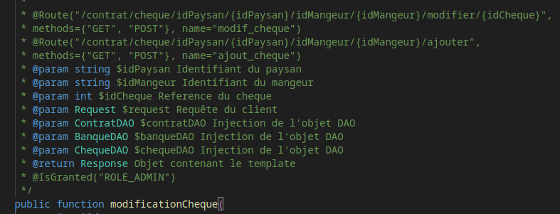
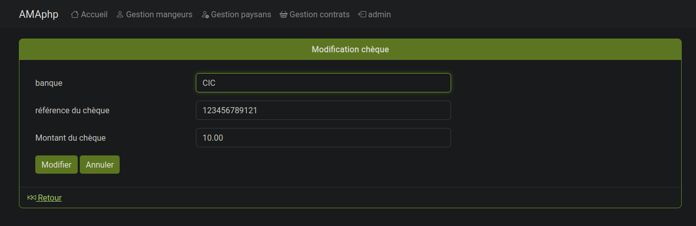
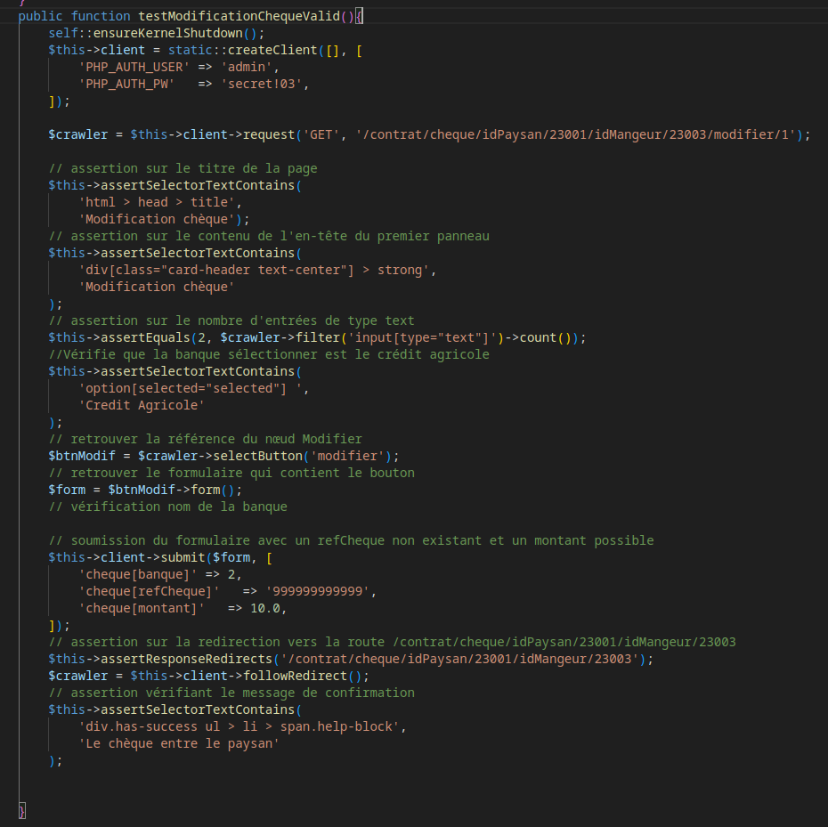

Gestion des contrats de l'application AMAP Auvergne itération 2c
Contexte :
Cet AP a été réalisé en groupe de 3, il s'agit d'une version évoluer de l'application AMAP php vu en 1er année. Celle-ci contient le framework symfony. Nous avons du tout d'abord analyser le cahier des charges disponible sur un document au format odt expliquant les points clé à savoir, afin de regrouper les nouvelles fonctionnalités à implémenter.
Pour cela nous avons utilisé Framapad qui a permis, d'énoncer de façon simple, les différentes tâches à réaliser. Quand ce-ci a été fait, notre chef de projet a mise en place des tickets sur la forge logicielle Framagit, afin de nous répartir nos tâches.
Pour chaque ticket qui nous était attribués, nous devions faire de façon détaille des spécifications de chacune de nos actions que nous allons entreprendre sur l'application (nouvelle route, méthode, modification bdd).
Les tickets étaient ranger en différentes catégories afin de voir l'avancement du projet et de savoir si nous devions passer à un autre, continuer de spécifier ou de programmer. les statuts étaient : "en attente" / "prêt" / "en cours" / "terminé"
Après spécification validée, nous pouvions commencer le développement de notre fonctionnalité, tout en étant conforme à nos spécifications. Si nous avions mal spécifier d'entrer ou que des changements ont eu lieu, ou pour plus préciser nous avions le droit de reprendre nos spécifications afin de les améliorer.
Ces spécifications étaient autant utilisé pour nous, afin de réaliser notre ticket, mais aussi par mes collègues, qui pouvaient avoir besoin d'utiliser une ou plusieurs de mes fonctionnalités (route, méthode).
Environnement technologique :
- VisualParadigm
- Firefox
- Framagit
- Apache Netbean
- QuickMockup
- PHP
- Twig
- Symfony
- Git
- MVC
- DAO
compétences mobilisées :
- B1.1.2 : Exploiter des référentiels, normes et standards adoptés par le prestataire informatique
Comme recommandation que nous avions à respecter, était celle du PSR2 de PHP, qui permet une homogénéisation du code et une meilleure lecture.
Pendant cet AP, j'ai pu globalement respecter le PSR2, mais parfois, suite à un rendu rapide de ma mission, j'ai pu oublier de le respecter. Pour éviter cette oublie j'aurai pu le noter dans un script à exécuter à chaque fin de tâche afin d’exécuter les tests et la commande PSR2 ou alors mettre dans une note sur par exemple le framapad qui contiendrait toutes les choses que je suis censé réaliser.
- B1.1.3 : Mettre en place et vérifier les niveaux d’habilitation associés à un service
J'ai dû m'assurer que seulement les personnes habilités pouvaient accéder aux pages. Dans notre cas seulement l’administrateur du site internet avait accès à nos pages.

- B1.2.3 : Traiter des demandes concernant les applications
Nous avons pu mettre en place certaines fonctionnalités qui nous avaient été demandé de rajouter. Dont l'ajout d'une gestion des chèques par le biais de menu. Les chèques étaient ajoutable, supprimables et éditables et tous lié à un contrat existant.
Pour réaliser cette demande, nous avons du après avoir partagé analysé et dispatcher les sous tâches à réaliser en différent ticket, dû faire une analyse de comment l'implémenter dans le code, par l'ajout de constructeur, de méthode, d'accès à la base de donnée (DAO), de nouvelle vue. Pour cela une analyse des fonctionnalités existantes et une veille active a dû être faite.

Afin d'être sur du bon fonctionnement de nos nouvelles fonctionnalités, des tests fonctionnels ont été mis en place, afin de réaliser des actions possibles de l'utilisateur et qu'ils retournent les bonnes informations, sans erreur.
Par exemple : j'ai testé l'ajout d'un nouveau chèque avec des valeurs possibles et impossible afin de voir le résultat attendu sur l'interface.
Des tests unitaires ont aussi été réalisés afin de vérifier les données de la base de donnée.
par exemple : supprimer un chèque et vérifier s'il est bien supprimer dans la base de donnée.

- B1.4.2 : Planifier les activités
Pour que le projet puisse avancer de façon optimale, nous avons du, après analyse du cahier des charges, regarder les différentes évolutions du projet pour les divisés afin que tous le mondes est des tâches à réaliser.
Pour cela nous avons pu noter les différentes tâches à réaliser grâce à framapad. Ensuite ces tâches ont pu être dispatchées en différentes sous tâches sur la forge logicielle framagit, qui permet de faire une gestion de version mais aussi de réaliser des tickets pour chacune de nos évolutions. Ces tickets ont été attribués par notre chef de projet.
Ces tickets permettent d'expliquer ce que nous devons faire de façon assez détailler et permet d'expliquer les rajouts réaliser dans le code de l'application(méthode, attributs, test ...)
- B1.6.2 : Mettre en œuvre des outils et stratégies de veille informationnelle
Afin de pouvoir utiliser correctement le framework symfony, j'ai dû me documenter sur ses fonctionnalités, pour cela j'ai pu réaliser une veille active,
Cette veille active je l'ai réalisé sur la documentation de symfony mais aussi sur des forums comme stack overflow afin de comprendre le fonctionnement des formulaires. Cela m’a permis de récupérer une liste d'élément dans la bdd afin de l'afficher dans une liste du formulaire.
Pour réaliser cette veille active j'ai recherché dans un moteur de recherche "symfony" afin de tomber sur le site officiel, afin de rechercher les fonctionnaltiés.
Dans mon cas, j'ai écrit "symfony formulaire" afin de recenser seulement les informations liées au formulaire de symfony. Cela proposé le site officiel symfony.com et le forum communautaire stack overflow.
J'ai pu obtenir le fonctionnement et des exemples de comment résoudre mon problème.
J'ai pu trouver différentes solutions, et j'ai pu les essayer dans mon code et utilisé celle qui était la plus simple à mettre en place.